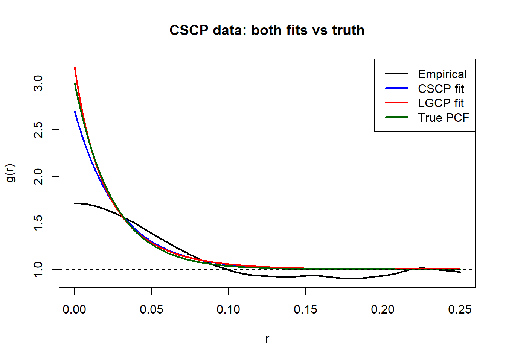
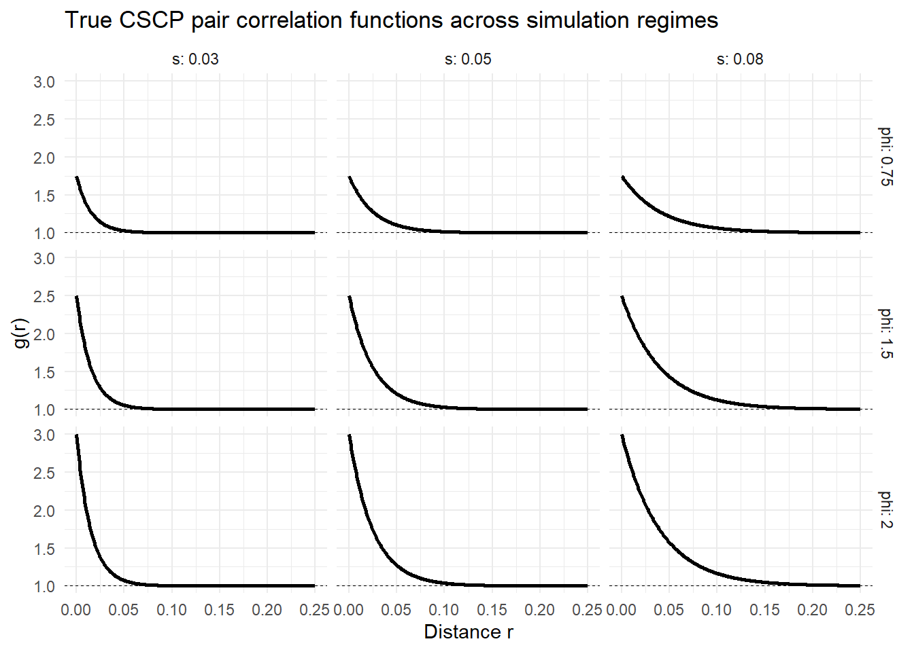
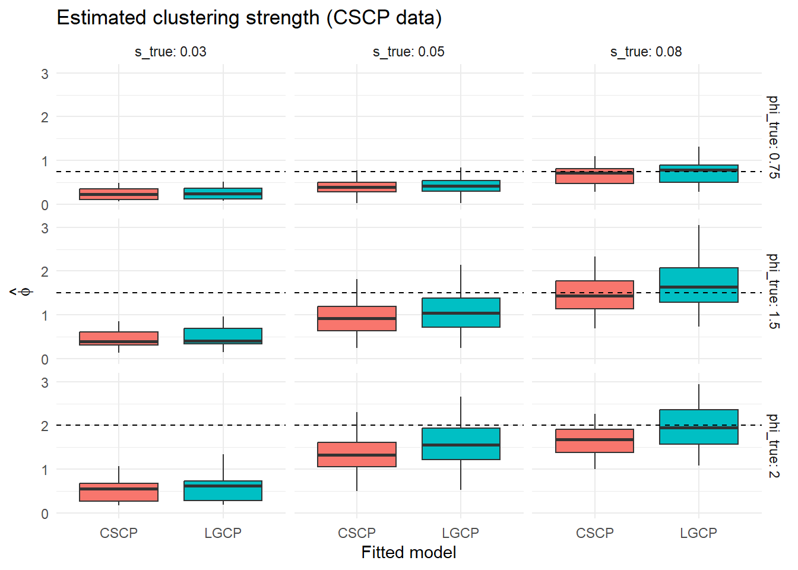
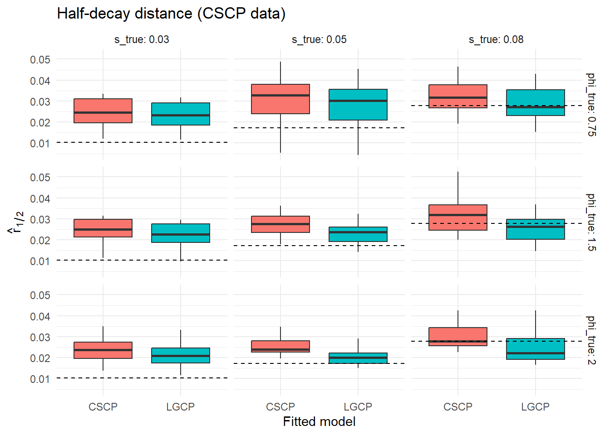
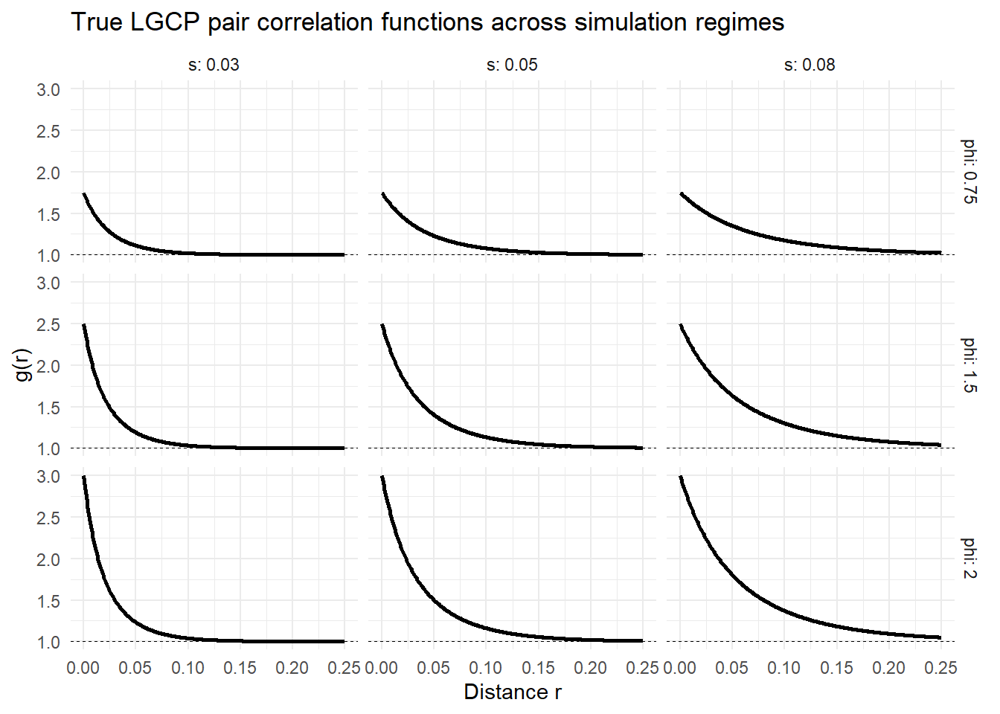
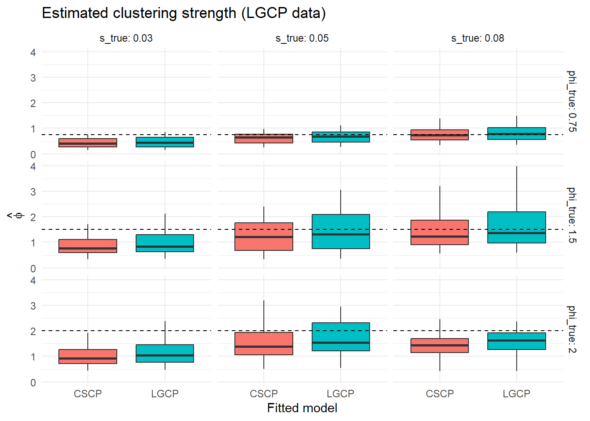
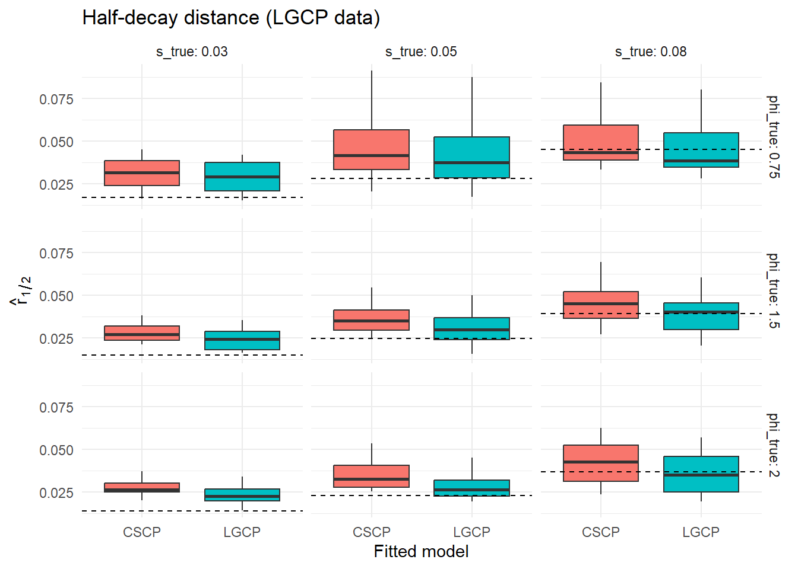

Code
half_decay_cscp <- function(phi, s) {
(s / 2) * log(2)
}
half_decay_lgcp <- function(phi, s) {
s * log(log(1 + phi) / log(1 + phi/2))
}The previous sections showed that LGCP and CSCP models can produce nearly identical pair correlation functions when their parameters are suitably chosen.
This section investigates whether this similarity carries through to statistical inference.
In particular, we examine whether minimum contrast estimation based on the pair correlation function leads to similar conclusions under the two models.
For each simulated dataset, we fit both LGCP and CSCP models, and compare the resulting estimates and fitted second-order structure.
This allows us to assess whether the two models produce consistent descriptions of clustering when applied to the same data.
The LGCP and CSCP models use different functional forms for their pair correlation functions:
\[ g_{CSCP}(r; \lambda, \phi, s_C) = 1 + \phi \exp\left(-\frac{2r}{s_C}\right), \]
\[ g_{LGCP}(r; \lambda, \phi, s_L) = (1 + \phi)^{\exp(-r/s_L)}. \]
As a result, their scale parameters \(s_C\) and \(s_L\) are not directly comparable, even when the models produce nearly identical curves.
To enable meaningful comparison, we focus on two quantities:
1. Clustering strength
\[ \phi = g(0) - 1 \]
This is common to both models and directly comparable.
2. Half-decay distance
We define the half-decay distance \(r_{1/2}\) as the distance at which the excess clustering halves:
\[ g(r_{1/2}) - 1 = \frac{\phi}{2} \]
For the two models this gives:
\[ r_{1/2}^{(C)} = \frac{s_C}{2}\log(2) \]
\[ r_{1/2}^{(L)} = s_L\log(\frac{\log(1 + \phi)}{\log(1 + \phi / 2)}) \]
This provides a model-independent measure of clustering scale, allowing meaningful comparison between models.
We consider the following procedure.
For each parameter setting \((\lambda, \phi, s)\):
If second-order structure alone is insufficient to distinguish between the models, we expect:
Some helpers for calculating \(r_{1/2}\):
half_decay_cscp <- function(phi, s) {
(s / 2) * log(2)
}
half_decay_lgcp <- function(phi, s) {
s * log(log(1 + phi) / log(1 + phi/2))
}And illustrating:

We first consider datasets generated from the CSCP model.
For each parameter setting \((\lambda, \phi, s)\), we:
We then compare the resulting estimates across the two fitted models.
To examine performance across a range of clustering regimes, we fix \(\lambda = 300\), and consider
\[ \phi \in \{0.75,\,1.5,\,2.0\}, \qquad s \in \{0.03,\,0.05,\,0.08\}. \] These values represent moderate to strong clustering (relative to the CSCP model) over short, intermediate, and longer spatial ranges.
Originally I wanted to use \(\phi \in \{0.25, 1, 2\}\), however for \(\phi = 0.25\), the estimation is very unstable so I decided to just use these new values.
Might’ve been better if I just used \(\{1, 2\}\), but I wanted nice 3x3 panels.
Additionally, I chose \(\lambda = 300\), as I wanted the non-parametric PCF estimator to perform well, so our results are not “muddied” by the poor empirical fit.
Bandwidth chosen as a value which has worked well in my experience. I think the proper thing to do would be to run some type of CV to find the best value? And importantly, we use the same bandwidth over each regime.
And the other settings are either matched to the ones you guys use in the paper on the new PCF estimator, or the default spatstat.
Are these sensible choices?

These curves illustrate the range of second-order structures considered in the simulation study. In particular, increasing \(\phi\) controls the magnitude of clustering, while increasing \(s\) controls the spatial extent over which clustering persists (don’t really think this comment is necessary, at this point should be fairly clear the roles which \(\phi\) and \(s\) play).
n_rep <- 20
results_list <- list()
counter <- 1
for (j in 1:nrow(scenarios)) {
phi_true <- scenarios$phi[j]
s_true <- scenarios$s[j]
for (i in 1:n_rep) {
X <- sim_cscp(W, lambda = 300, phi = phi_true, s = s_true)$pp
fit_c <- fit_cscp_mc(
X,
bw = fit_args$bw,
correction = "isotropic",
divisor = "a",
zerocor = "JonesFoster"
)
fit_l <- fit_lgcp_mc(
X,
bw = fit_args$bw,
correction = "isotropic",
divisor = "a",
zerocor = "JonesFoster"
)
results_list[[counter]] <- data.frame(
generator = "CSCP",
phi_true = phi_true,
s_true = s_true,
r_half_true = half_decay_cscp(phi_true, s_true),
rep = i,
fit_model = "CSCP",
phi_hat = fit_c$par[["phi"]],
s_hat = fit_c$par[["s"]],
r_half = half_decay_cscp(fit_c$par[["phi"]], fit_c$par[["s"]])
)
counter <- counter + 1
results_list[[counter]] <- data.frame(
generator = "CSCP",
phi_true = phi_true,
s_true = s_true,
r_half_true = half_decay_cscp(phi_true, s_true),
rep = i,
fit_model = "LGCP",
phi_hat = fit_l$par[["phi"]],
s_hat = fit_l$par[["s"]],
r_half = half_decay_lgcp(fit_l$par[["phi"]], fit_l$par[["s"]])
)
counter <- counter + 1
}
}
results <- dplyr::bind_rows(results_list)We first compare the fitted models visually through the distribution of estimated clustering strength and half-decay distance across simulations.


To quantify these differences, we summarise the agreement between the two fitted models across simulations.
# This is nasty work, would come back and clean up if this wasn't just rough
# notes
# True half-decay for CSCP generator
results <- results %>%
mutate(
r_half_true = half_decay_cscp(phi_true, s_true),
phi_error = phi_hat - phi_true,
r_half_error = r_half - r_half_true
)
agreement_table <- results %>%
dplyr::select(generator, phi_true, s_true, rep, fit_model, phi_hat, r_half) %>%
tidyr::pivot_wider(
names_from = fit_model,
values_from = c(phi_hat, r_half)
) %>%
dplyr::mutate(
delta_phi = abs(phi_hat_CSCP - phi_hat_LGCP),
delta_r_half = abs(r_half_CSCP - r_half_LGCP),
rel_delta_phi = delta_phi / phi_true,
rel_delta_r_half = delta_r_half / half_decay_cscp(phi_true, s_true)
) %>%
dplyr::group_by(generator, phi_true, s_true) %>%
dplyr::summarise(
mean_delta_phi = mean(delta_phi, na.rm = TRUE),
mean_delta_r_half = mean(delta_r_half, na.rm = TRUE),
mean_rel_delta_phi = mean(rel_delta_phi, na.rm = TRUE),
mean_rel_delta_r_half = mean(rel_delta_r_half, na.rm = TRUE),
median_rel_delta_phi = median(rel_delta_phi, na.rm = TRUE),
median_rel_delta_r_half = median(rel_delta_r_half, na.rm = TRUE),
.groups = "drop"
)
agreement_table_clean <- agreement_table %>%
mutate(
median_rel_delta_phi = 100 * median_rel_delta_phi,
median_rel_delta_r_half = 100 * median_rel_delta_r_half
) %>%
select(
phi_true, s_true,
mean_delta_phi,
median_rel_delta_phi,
median_rel_delta_r_half
)variability_table <- results %>%
dplyr::group_by(generator, phi_true, s_true, fit_model) %>%
dplyr::summarise(
sd_phi_hat = sd(phi_hat, na.rm = TRUE),
sd_r_half = sd(r_half, na.rm = TRUE),
.groups = "drop"
)
comparison_table <- agreement_table %>%
left_join(
variability_table %>%
group_by(phi_true, s_true) %>%
summarise(
sd_phi = mean(sd_phi_hat),
sd_r_half = mean(sd_r_half),
.groups = "drop"
),
by = c("phi_true", "s_true")
) %>%
mutate(
ratio_phi = mean_delta_phi / sd_phi,
ratio_r_half = mean_delta_r_half / sd_r_half
) %>%
select(phi_true, s_true, ratio_phi, ratio_r_half)A small number of the fits produced wildly inaccurate estimates, which I’m assuming is just due to unreliable PCF estimation in general, rather than anything specific to the models I’m fitting.
As such, we focus on the median relative differences, rather than the mean, reducing the influence of the occasional outlier.
Also note, these tables aren’t particularly readable, but I don’t want to spend a bunch of time formatting stuff nicely when I don’t even know whether the methodolgy of the study is correct.
| phi_true | s_true | mean_delta_phi | median_rel_delta_phi | median_rel_delta_r_half |
|---|---|---|---|---|
| 0.75 | 0.03 | 0.019 | 1.0 | 12.1 |
| 0.75 | 0.05 | 0.042 | 2.5 | 14.4 |
| 0.75 | 0.08 | 0.065 | 9.3 | 12.9 |
| 1.50 | 0.03 | 0.037 | 1.4 | 19.3 |
| 1.50 | 0.05 | 0.145 | 7.6 | 23.0 |
| 1.50 | 0.08 | 0.272 | 14.1 | 20.9 |
| 2.00 | 0.03 | 0.075 | 2.6 | 22.8 |
| 2.00 | 0.05 | 0.275 | 11.9 | 27.7 |
| 2.00 | 0.08 | 0.316 | 13.1 | 23.1 |
The results show that both LGCP and CSCP models yield highly consistent second-order inference when fitted to the same CSCP-generated datasets.
Across all parameter regimes, the median relative differences in estimated clustering strength \(\hat{\phi}\) are small, typically below 15%. The corresponding differences in half-decay distance \(\hat{r}_{1/2}\) are somewhat larger, but remain moderate, generally within 10–30%.
To assess whether these differences are practically meaningful, we compare them to the inherent variability of the estimators.
| phi_true | s_true | ratio_phi | ratio_r_half |
|---|---|---|---|
| 0.75 | 0.03 | 0.087 | 0.070 |
| 0.75 | 0.05 | 0.186 | 0.024 |
| 0.75 | 0.08 | 0.238 | 0.127 |
| 1.50 | 0.03 | 0.185 | 0.287 |
| 1.50 | 0.05 | 0.324 | 0.511 |
| 1.50 | 0.08 | 0.518 | 0.660 |
| 2.00 | 0.03 | 0.199 | 0.249 |
| 2.00 | 0.05 | 0.468 | 1.129 |
| 2.00 | 0.08 | 0.700 | 0.659 |
For both clustering strength and half-decay distance, the difference between the two fitted models is consistently smaller than the standard deviation of the estimates. In all scenarios, the ratio of cross-model differences to estimation variability is well below one.
This indicates that the differences between LGCP and CSCP fits are negligible relative to statistical uncertainty. In particular, the two models lead to essentially the same conclusions regarding the strength and spatial extent of clustering in the data.
From the perspective of second-order inference, the choice between LGCP and CSCP does not materially affect the conclusions drawn from the data.
This provides empirical evidence that second-order summaries alone are insufficient to distinguish between these model classes in practice.
So we’ve seen the difference in fitted models is not very substantial, however I thought it might be nice to see which actually fits the data better, so we take a brief look here:
Again, note that because a small number of fits produced extremely large scale estimates, leading to unrealistic values of the half-decay distance. To prevent these from dominating mean-based summaries, we report trimmed RMSE values, which are more robust to such instabilities.
| phi_true | s_true | fit_model | phi_rmse | r_half_rmse |
|---|---|---|---|---|
| 0.75 | 0.03 | CSCP | 0.514 | 0.021 |
| 0.75 | 0.03 | LGCP | 0.508 | 0.020 |
| 0.75 | 0.05 | CSCP | 0.362 | 0.020 |
| 0.75 | 0.05 | LGCP | 0.357 | 0.018 |
| 0.75 | 0.08 | CSCP | 0.246 | 0.021 |
| 0.75 | 0.08 | LGCP | 0.275 | 0.019 |
| 1.50 | 0.03 | CSCP | 1.070 | 0.015 |
| 1.50 | 0.03 | LGCP | 1.039 | 0.013 |
| 1.50 | 0.05 | CSCP | 0.628 | 0.011 |
| 1.50 | 0.05 | LGCP | 0.584 | 0.008 |
| 1.50 | 0.08 | CSCP | 0.406 | 0.009 |
| 1.50 | 0.08 | LGCP | 0.581 | 0.008 |
| 2.00 | 0.03 | CSCP | 1.472 | 0.016 |
| 2.00 | 0.03 | LGCP | 1.424 | 0.014 |
| 2.00 | 0.05 | CSCP | 0.770 | 0.008 |
| 2.00 | 0.05 | LGCP | 0.715 | 0.005 |
| 2.00 | 0.08 | CSCP | 0.460 | 0.008 |
| 2.00 | 0.08 | LGCP | 0.489 | 0.008 |
Across all parameter regimes, the RMSE values for the two fitted models are very similar. Differences between LGCP and CSCP fits are small in magnitude and show no consistent pattern: in some regimes the CSCP fit yields slightly lower error, while in others the LGCP fit performs marginally better.
Importantly, even though the data are generated from a CSCP model, fitting an LGCP produces estimates with comparable accuracy. This indicates that, when inference is based on second-order summaries, neither model has a clear advantage in recovering the underlying clustering structure.
I find deciding on what results to display really difficult, is there some sort of default / boiler that I can just always use and be confident I’m presenting the right information?
Really should have a better commentary / analysis on how well the models are fitting in general. If they both suck at recovering the true parameter values, do we really care that they are not very dissimilar?
We now repeat the study with data generated from an LGCP model.
For each parameter setting \((\lambda, \phi, s)\), we:
We then compare the resulting estimates across the two fitted models.
As before, we fix \(\lambda = 300\), and consider
\[ \phi \in \{0.75,\,1.5,\,2.0\}, \qquad s \in \{0.03,\,0.05,\,0.08\}. \]
These values span a range of clustering strengths and spatial scales, allowing us to assess whether the same practical non-identifiability appears when the data are generated from the LGCP rather than the CSCP.

results_lgcp_list <- list()
counter <- 1
for (j in 1:nrow(scenarios)) {
phi_true <- scenarios$phi[j]
s_true <- scenarios$s[j]
for (i in 1:n_rep) {
X <- sim_lgcp(W, lambda = 300, phi = phi_true, s = s_true)$pp
fit_l <- fit_lgcp_mc(
X,
bw = fit_args$bw,
correction = "isotropic",
divisor = "a",
zerocor = "JonesFoster"
)
fit_c <- fit_cscp_mc(
X,
bw = fit_args$bw,
correction = "isotropic",
divisor = "a",
zerocor = "JonesFoster"
)
results_lgcp_list[[counter]] <- data.frame(
generator = "LGCP",
phi_true = phi_true,
s_true = s_true,
r_half_true = half_decay_lgcp(phi_true, s_true),
rep = i,
fit_model = "LGCP",
phi_hat = fit_l$par[["phi"]],
s_hat = fit_l$par[["s"]],
r_half = half_decay_lgcp(fit_l$par[["phi"]], fit_l$par[["s"]])
)
counter <- counter + 1
results_lgcp_list[[counter]] <- data.frame(
generator = "LGCP",
phi_true = phi_true,
s_true = s_true,
r_half_true = half_decay_lgcp(phi_true, s_true),
rep = i,
fit_model = "CSCP",
phi_hat = fit_c$par[["phi"]],
s_hat = fit_c$par[["s"]],
r_half = half_decay_cscp(fit_c$par[["phi"]], fit_c$par[["s"]])
)
counter <- counter + 1
}
}
results_lgcp <- dplyr::bind_rows(results_lgcp_list)We again compare the fitted models visually through the distribution of estimated clustering strength and half-decay distance across simulations.


To quantify these differences, we summarise the agreement between the two fitted models across simulations.
results_lgcp <- results_lgcp %>%
mutate(
r_half_true = half_decay_lgcp(phi_true, s_true),
phi_error = phi_hat - phi_true,
r_half_error = r_half - r_half_true
)
agreement_table_lgcp <- results_lgcp %>%
dplyr::select(generator, phi_true, s_true, rep, fit_model, phi_hat, r_half) %>%
tidyr::pivot_wider(
names_from = fit_model,
values_from = c(phi_hat, r_half)
) %>%
dplyr::mutate(
delta_phi = abs(phi_hat_CSCP - phi_hat_LGCP),
delta_r_half = abs(r_half_CSCP - r_half_LGCP),
rel_delta_phi = delta_phi / phi_true,
rel_delta_r_half = delta_r_half / half_decay_lgcp(phi_true, s_true)
) %>%
dplyr::group_by(generator, phi_true, s_true) %>%
dplyr::summarise(
mean_delta_phi = mean(delta_phi, na.rm = TRUE),
mean_delta_r_half = mean(delta_r_half, na.rm = TRUE),
mean_rel_delta_phi = mean(rel_delta_phi, na.rm = TRUE),
mean_rel_delta_r_half = mean(rel_delta_r_half, na.rm = TRUE),
median_rel_delta_phi = median(rel_delta_phi, na.rm = TRUE),
median_rel_delta_r_half = median(rel_delta_r_half, na.rm = TRUE),
.groups = "drop"
)
agreement_table_lgcp_clean <- agreement_table_lgcp %>%
mutate(
median_rel_delta_phi = 100 * median_rel_delta_phi,
median_rel_delta_r_half = 100 * median_rel_delta_r_half
) %>%
select(
phi_true, s_true,
mean_delta_phi,
median_rel_delta_phi,
median_rel_delta_r_half
)variability_table_lgcp <- results_lgcp %>%
dplyr::group_by(generator, phi_true, s_true, fit_model) %>%
dplyr::summarise(
sd_phi_hat = sd(phi_hat, na.rm = TRUE),
sd_r_half = sd(r_half, na.rm = TRUE),
.groups = "drop"
)
comparison_table_lgcp <- agreement_table_lgcp %>%
left_join(
variability_table_lgcp %>%
group_by(phi_true, s_true) %>%
summarise(
sd_phi = mean(sd_phi_hat),
sd_r_half = mean(sd_r_half),
.groups = "drop"
),
by = c("phi_true", "s_true")
) %>%
mutate(
ratio_phi = mean_delta_phi / sd_phi,
ratio_r_half = mean_delta_r_half / sd_r_half
) %>%
select(phi_true, s_true, ratio_phi, ratio_r_half)| phi_true | s_true | mean_delta_phi | median_rel_delta_phi | median_rel_delta_r_half |
|---|---|---|---|---|
| 0.75 | 0.03 | 0.031 | 2.7 | 15.4 |
| 0.75 | 0.05 | 0.058 | 5.0 | 13.0 |
| 0.75 | 0.08 | 0.055 | 6.3 | 10.0 |
| 1.50 | 0.03 | 0.141 | 4.7 | 24.8 |
| 1.50 | 0.05 | 0.265 | 7.2 | 23.8 |
| 1.50 | 0.08 | 0.203 | 8.1 | 17.3 |
| 2.00 | 0.03 | 0.163 | 5.8 | 31.5 |
| 2.00 | 0.05 | 0.287 | 8.6 | 27.5 |
| 2.00 | 0.08 | 0.192 | 9.8 | 18.0 |
| phi_true | s_true | ratio_phi | ratio_r_half |
|---|---|---|---|
| 0.75 | 0.03 | 0.142 | 0.113 |
| 0.75 | 0.05 | 0.157 | 0.155 |
| 0.75 | 0.08 | 0.181 | 0.226 |
| 1.50 | 0.03 | 0.263 | 0.640 |
| 1.50 | 0.05 | 0.256 | 0.559 |
| 1.50 | 0.08 | 0.223 | 0.511 |
| 2.00 | 0.03 | 0.305 | 0.642 |
| 2.00 | 0.05 | 0.280 | 0.720 |
| 2.00 | 0.08 | 0.316 | 0.559 |
The results again show that both LGCP and CSCP models yield highly consistent second-order inference when fitted to the same datasets.
Across the parameter regimes considered, the differences in estimated clustering strength \(\hat{\phi}\) and half-decay distance \(\hat r_{1/2}\) remain small relative to the overall Monte Carlo variability of the estimators. Although the fitted models use different functional forms, they continue to provide very similar descriptions of the clustering present in the data.
Importantly, this behaviour persists even when the data are generated from the LGCP itself. Thus, the practical similarity observed in the previous section is not specific to CSCP-generated data, but appears symmetrically in both directions.
This strengthens the conclusion that second-order summaries alone are not sufficient to distinguish between these model classes in practice.
As before, we can also compare the accuracy of the two fitted models through RMSE.
| phi_true | s_true | fit_model | phi_rmse | r_half_rmse |
|---|---|---|---|---|
| 0.75 | 0.03 | CSCP | 0.372 | 0.026 |
| 0.75 | 0.03 | LGCP | 0.362 | 0.024 |
| 0.75 | 0.05 | CSCP | 0.266 | 0.023 |
| 0.75 | 0.05 | LGCP | 0.271 | 0.021 |
| 0.75 | 0.08 | CSCP | 0.250 | 0.015 |
| 0.75 | 0.08 | LGCP | 0.287 | 0.014 |
| 1.50 | 0.03 | CSCP | 0.737 | 0.014 |
| 1.50 | 0.03 | LGCP | 0.735 | 0.011 |
| 1.50 | 0.05 | CSCP | 0.685 | 0.014 |
| 1.50 | 0.05 | LGCP | 0.805 | 0.011 |
| 1.50 | 0.08 | CSCP | 0.689 | 0.012 |
| 1.50 | 0.08 | LGCP | 0.872 | 0.011 |
| 2.00 | 0.03 | CSCP | 1.072 | 0.015 |
| 2.00 | 0.03 | LGCP | 1.003 | 0.011 |
| 2.00 | 0.05 | CSCP | 0.845 | 0.014 |
| 2.00 | 0.05 | LGCP | 0.912 | 0.009 |
| 2.00 | 0.08 | CSCP | 0.718 | 0.013 |
| 2.00 | 0.08 | LGCP | 0.677 | 0.011 |
Across all parameter regimes, the RMSE values for the two fitted models remain very similar. Even when the data are generated from an LGCP model, fitting a CSCP produces estimates with comparable accuracy.
Taken together with the CSCP-generated results, this suggests that minimum contrast estimation based on the pair correlation function is primarily recovering shared second-order structure, rather than features specific to either model class.
Across the previous sections, we investigated whether the theoretical similarity between the LGCP and CSCP pair correlation functions carries through to practical statistical inference.
We first showed that, for suitable parameter choices, the two models can produce very similar pair correlation functions. In particular, when expressed in terms of the clustering strength \(\phi = g(0) - 1\) and a characteristic spatial scale, the difference between the two families is often negligible over the range of distances relevant for estimation.
We then examined whether this similarity affects inference by conducting simulation studies in both directions:
In both cases, the results were remarkably consistent. The two fitted models produced:
Moreover, the differences between the models were small relative to the overall Monte Carlo variability of the estimators. In other words, fitting the “wrong” model did not meaningfully degrade second-order inference.
At a practical level, these results suggest that inference based on second-order summaries, such as minimum contrast estimation using the pair correlation function, is largely driven by the shape of the PCF, rather than the specific underlying model.
Since the LGCP and CSCP are capable of generating very similar PCFs, they also lead to very similar second-order inference, even under model misspecification.
This implies that, in many realistic settings, it may be difficult to distinguish between these model classes using second-order statistics alone.
These findings have two important implications.
First, care should be taken when interpreting fitted Cox process models based only on second-order summaries. A good fit to the empirical PCF does not necessarily provide strong evidence in favour of one model over another, if multiple models can reproduce the same second-order structure.
Second, model choice in this context should be guided not only by goodness-of-fit at the level of the PCF, but also by:
Some thoughts I have:
I really think the two most important pieces of information that need to be provided here are (1) that the models actually perform well and (2) that the difference between the models is smaller than the variation in the empirical PCF estimator.
Right now I don’t think I do a very good job of framing this.
I will continue to work on this, but regardless, it seems we are not going to be very successful in distinguishing between the two models using PCF-based methods.
The results of this study naturally raise the question of how the models might be distinguished in practice.
One possible direction is to consider features beyond second-order structure. For example:
Alternatively, one could investigate whether differences in the marginal distribution of the intensity field, or in extreme clustering behaviour, provide useful distinguishing features.
Exploring these directions may help to identify settings in which the LGCP and CSCP can be meaningfully separated, and where model choice has a more substantial impact on inference.